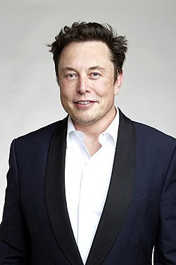

Elon Musk eredeti nevén Elon Reeve Musk, FRS (Pretoria, 1971. június 28. –) dél-afrikai származású amerikai mérnök, vállalkozó és multimilliárdos innovátor, a világ leggazdagabb embere. A Surrey University díszdoktora. Nevéhez fűződnek a Zip2, az X.com, a PayPal, a SpaceX, a Tesla Inc., a SolarCity, a The Boring Company, a Neuralink vállalkozások, Starlink projekt és a Hyperloop megtervezése.
Anyai nagyapja, Dr. Joshua Haldeman egy amerikai származású kanadai volt, míg apai nagyanyja brit és pennsylvániai felmenőkkel bírt. Szülőhazájából, a Dél-afrikai Köztársaságból 17 évesen Kanadába vándorolt, mert el akarta kerülni a sorkatonai szolgálatot. Fizikát és közgazdaságtant tanult az egyetemen, majd két diploma után otthagyta Kanadát, és az USA-ba költözött. A kaliforniai Stanford Egyetemre felvételizett, ám szinte azonnal, két nap múlva ott is hagyta. Állítása szerint azért, „hogy fontosabb problémákkal foglalkozzon, amik befolyásolják az emberiség jövőjét”. Első jelentősebb üzleti fogása a Blastar nevű játékprogrameladása volt, melyet 12 évesen írt meg. Ezért a programért összesen 500 dollárt kapott. Később öccsével, Kimbal Muskkal 1995-ben megalapította a Zip2 nevű internetes vállalatot. Ezt 1999-ben 341 millió dollárért eladta a Compaqnak.
A pénzt a PayPal megalakításába fektette, mely pár év múlva az internet egyik meghatározó szolgáltatása lett. Az eBay 1,5 milliárd dollárért vásárolta fel a céget 2002 októberében.
Ezután Musk 2002-ben megalapította a SpaceX céget, azzal a céllal, hogy forradalmasítsa az űrrepülést, megkönnyítse az űr elérését és lehetővé tegye az emberi társadalom multiplanetárissá válását. Célja az volt, hogy önerőből fejlesszen ki egy űrkapszulát, mely később akár embereket is szállíthat a Nemzetközi Űrállomásra. A kapszula fejlesztése közel tíz évig tartott, de végül sikerrel járt. A Dragon űrhajó sikeresen Föld körüli pályára állt, majd hozzákapcsolódott a Nemzetközi Űrállomáshoz 2012-ben. 2020-ban pedig már két űrhajóst szállított az űrállomásra.
A Spacex – amelynek tulajdonosa és fejlesztési főmérnöke Elon Musk – elsőként feljesztette ki a fel- és leszállásra is alkalmas Falcon 9 hordozórakétát, ezzel drasztikusan lecsökkentette a Föld körüli pályára állítás költségét. A költséghatékony pályára állítás előnyére alapozva indította el Musk a Starlink projektjét, amellyel lehetővé teszi a globális internet elérést, a Föld teljes felszínén történő internet szolgáltatást.
2004-ben 6,5 millió dollárt fektetett magánvagyonából a Martin Eberhard, Marc Tarpenning és Ian Wright által 2003-ban alapított Tesla Motors autógyártó startupba, mely elektromos autókat fejleszt és gyárt, illetve a töltésükhöz szükséges töltőhálózatot épít. A cégalapítók sok más befektetőt is megkerestek, de csak Musk látott elég fantáziát a cég víziójában, melynek fő céljával – az amerikai olajfüggőség csökkentése – maga is egyetértett. Befektetésével Musk a cég főrészvényese, és a vállalat elnöke lett, a következő években még több tízmillió dollárt fektetett a cégbe a beindításához. A cég tíz év alatt több sorozatgyártású modellt dobott piacra.
2013-ban a Hyperloop nevű tervével került a figyelem középpontjába, ugyanis kijelentette, hogy forradalmasítani tudná a szárazföldi tömegközlekedést. Későbbi tervei között szerepel egy Mars-utazás magántőkéből és egy hatékonyabb meghajtás megvalósítása az űrhajók számára. A projekt részeként 2018. február 6-án kilövésre került a Falcon Heavy – hatvan tonnányi hasznos teher űrbe juttatására alkalmas – hordozórakéta-komplexumának kísérleti példánya. A rakéta Musk Space-X start up vállalkozásának része volt és az első általa szállított teher egy meggypiros Tesla Roadster volt. Elon Musk Tesla Roadstere száz kilométer magasság fölött kinyíló burkolat alól bukkant ki, a kocsi volánjánál a Starman elnevezésű bábu abba a szkafanderbe volt öltöztetve, amit 2020-ban már a SpaceX Crew Dragon űrhajójának utasai viseltek, amikor a Nemzetközi Űrállomásra repültek. A műszerfalon pedig a Galaxis útikalauz stopposoknakból ismert, a címszereplő könyv borítóján található „Don’t Panic!” („Ne ess pánikba!”) volt olvasható.
2020-ban, főleg a Tesla részvényeinek köszönhetően Musk vagyona 127,9 milliárd dollárra nőtt, ezzel a világ 2. leggazdagabb embere lett. Az év elején még csak a 35. helyen állt ebben a rangsorban.
